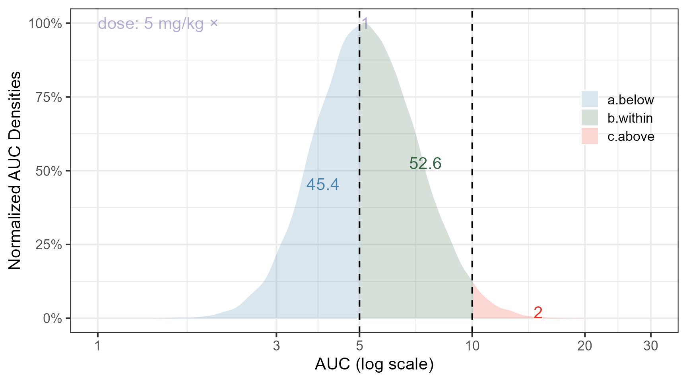

Code
library(ggplot2)
library(tidyr)
library(dplyr)
library(patchwork)
library(gganimate)
library(magick)
set.seed(1654132)
pediatricdemogs <- read.csv("pediatricdemogs.csv") %>%
filter(AGE<=5)
pediatricdemogs$PMA <- (pediatricdemogs$AGE*52) +40
pediatricdemogs$MAT <- (pediatricdemogs$PMA ^3.4 )/( (pediatricdemogs$PMA ^3.4 )+(47.7^3.4 ) )
pediatricdemogs$CL <- 12*(pediatricdemogs$WT/12)^0.75*pediatricdemogs$MAT
pediatricdemogs$CLi <- pediatricdemogs$CL*exp(rnorm(n = length(pediatricdemogs$CL),mean = 0 , sd = sqrt(0.09)))
pediatricdemogs$CLikg <- pediatricdemogs$CLi/pediatricdemogs$WT
pediatricdemogs$DOSE <- 120
pediatricdemogs$AUC <- pediatricdemogs$DOSE/pediatricdemogs$CLi
pediatricdemogs$DOSEMG <- 5*pediatricdemogs$WT
pediatricdemogs$AUCMG <- pediatricdemogs$DOSEMG/pediatricdemogs$CLi
percentagesoriginal<- pediatricdemogs %>%
summarize(nvalues = length(AUCMG),
a.below = length(AUCMG[AUCMG<5])/nvalues,
b.within = length(AUCMG[AUCMG>=5 & AUCMG<=10])/nvalues,
c.above = length(AUCMG[AUCMG>10])/nvalues,
DOSEMG = mean(DOSEMG),
medauc = median(AUCMG))
ggplot(pediatricdemogs )+
annotate(geom="text",x=1,y=1, col ="#7059a6",label="dose: 5 mg/kg ×",
vjust =0.5,hjust = 0, alpha=0.5)+
geom_density(aes(x = AUCMG,
y=after_stat(scaled),
fill = after_stat(
case_when(x < 5 ~ "a.below",
x >= 5 & x <= 10 ~ "b.within",
x > 10 ~ "c.above"))),alpha=0.2,
color ="transparent") +
geom_text(data=percentagesoriginal,
aes(x = 4,y = a.below, label = round(100* a.below,1)),col= "#4682AC")+
geom_text(data=percentagesoriginal,
aes(x = 7.5,y = b.within, label = round(100* b.within,1)),col= "#336343")+
geom_text(data=percentagesoriginal,
aes(x = 15,y = c.above, label = round(100* c.above ,1)),col= "#EE3124")+
geom_text(data=percentagesoriginal,
aes(x = 5.187374,y = 1, label ="1"),col= "#7059a6",
vjust =0.5, alpha = 0.5)+
geom_vline(xintercept = 5 , linetype ="dashed")+
geom_vline(xintercept = 10 , linetype ="dashed")+
scale_x_log10(breaks =c(1,3,5,10,20,30))+
labs(fill="",y="Normalized AUC Densities",x="AUC (log scale)")+
theme_bw(base_size = 16)+
theme(legend.position = "inside",
legend.position.inside = c(0.9,0.7),
legend.background = element_blank())+ scale_fill_manual(values=c("#4682AC",
"#336343", "#EE3124", "#FDBB2F", "#7059a6", "#803333"))+
scale_color_manual(values=c("#4682AC",
"#336343", "#EE3124", "#336343", "#7059a6", "#803333"))+
scale_y_continuous(labels = scales::percent)+
coord_cartesian(ylim=c(0,1),xlim =c(1,30))